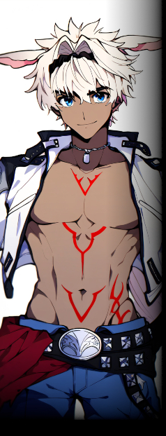
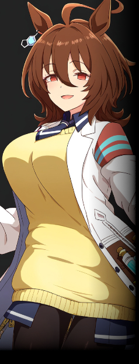

▼政府機関【 グングニル 】
上層、そしてイルミンスール全土を束ねる政府機関。
島全体の運営と治安維持、そして異能者研究を主要な目的とする。
政府機関だけあってイルミンスール全域に影響力を持つが、 |
▼ルザミーネ・ウォーデン
| ||||||||||||||
|
イルミンスール総督にしてグングニル室長。
外の世界の政府から派遣された非能力者。
大らかで慈愛に満ちた振る舞い、そしてその年齢にそぐわぬ美貌ゆえ市民からの支持は厚い。
島内ではごく少数の者しか与り知らぬ事実ではあるが、
「人間には役割があります。私より有能であるなら、その方が舵を取れば良いのです」 |
||||||||||||||
▼治安維持部隊【 グレイプニル 】
異能者のみで構成された上層の特殊部隊。現場において個人として発揮できる権限は最高クラス。
イルミンスール内であるからこそ局地戦闘にとどまっているが、
決まった分隊などの構成はなく、有事の際には臨時でチーム編成され任務に当たる。 |
|  |
▼カイニス・トリベディ・ティッルチラーッパリカー
|
|||||||||||||
|
治安維持部隊グレイプニル総隊長。ユグドラシルにおける事実上の最高戦力。
性格は豪快……というより粗暴。誰が相手でも自信過剰で、気に食わなければ暴力に訴えることも厭わない狂犬。
異能は自らを概念的に補強する【海神の偏愛】。常時発動型の異能で、獣耳はこれを制御するための器官でもある。 ――現在、セスタスとの組手試合で重傷を負い、治療中。
「あ？ このカイニス様に小間使いをさせる気か？」 |
||||||||||||||
▼情報管理局【 ニーベルング 】
イルミンスールの情報統制機関。
表での活動も抜かりはなく、ＴＶ・ラジオ・新聞・電脳世界でのメディア展開を広く・多く担っている。 セントラルタワー中階に拠点を置く。 |
▼ナンジャモ
|
|||||||||||||
|
ニーベルング広報部長を務めるバーチャル配信者。島内のアイドル的存在。 微妙にコミュ障気味で、身内外とのコラボの際は借りて来た猫のようにおとなしくなる。
「おはこんハロチャオー！ あなたの目玉にワイヤートラップ！ ナニモンなんじゃ！？ ナンジャモで～す！」 |
|||||||||||||
|
|
|||||||||||||
|
|
▼夢見 りあむ
|
||||||||||||
|
ニーベルング局長にしてナンジャモの「中の人」。性質上、公的には非公開の人物である。
ここまで書いた通り、経歴や能力の面においてはまさしく天才以外の何でもないのだが、
「は～めっちゃやむ……。空から５０００兆クレジット降ってきて二度と働かなくてよくなんないかな……」 |
|||||||||||||

▼異能研究機関【 フラメル 】
イルミンスールを代表する研究機関。
セントラルタワー中層階に本部（と、タキオンの研究室）を設置しており、
異能研究の「サンプル」には事欠かないイルミンスールという土地の性質もあって、 |
|
 |
▼タキオン・アグネス
|
||||||||||||
|
研究機関フラメルの委員長を務める、ウマの形質を持つ研究者の女性。
科学者として分野を問わず幅広く業績を残しており、研究者としては天才の二文字に尽きる。
グングニルやルザミーネの目的に対してはさほど興味はなく、
異能は時間を幅広く操るアンノウン能力【 ギャラクシー・アイズ 】。
「実に興味深いねぇ。私のモルモットになる気はないかい？」 |
|||||||||||||